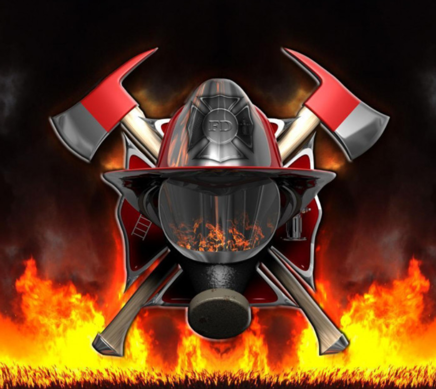

What's up, people? Ik ben de man, de mythe, de legende, Bjarne. Als brandweerman heb ik de ballen van staal om branden te blussen en levens te redden. Maar dat is niet alles wat ik doe. Ik gebruik mijn vrije tijd om te sporten en te programmeren. Als ik niet in de sportschool te vinden ben, dan ben ik wel bezig met het bouwen van robots en het hacken van het Pentagon. Oké, dat laatste is misschien een grapje, maar ik denk wel dat ik het zou kunnen als ik het echt zou willen.
En dan heb ik ook nog eens een fantastisch gezin. Een vrouw die net zo badass is als ik en twee dochters die slimmer zijn dan de gemiddelde programmeur. Ze zorgen er wel voor dat ik met beide benen op de grond blijf, en soms moet ik gewoon met ze meegaan in een gezelschapsspelletje of gewoon samen chillen op de bank. Maar hey, iedereen heeft rust nodig, zelfs ik.
Dus als er ooit brand uitbreekt of als je een robot nodig hebt om je koffie te zetten, dan ben ik je man. Ik heb de spieren, de brains en het gezin om het allemaal te doen. En als je me wilt verslaan in een potje padel, dan zou ik daar wel even over nadenken, want ik ben een ninja op de baan.
Dus, dat ben ik in een notendop: een sportieve brandweerman met een prachtig gezin en een drang naar avontuur en kennis. Ik ben er trots op wie ik ben en wat ik doe, ook al maken mijn dochters soms grapjes over me. Ik blijf ze gewoon bijbenen, en wie weet kan ik ze ooit eens verslaan op de tennisbaan!
